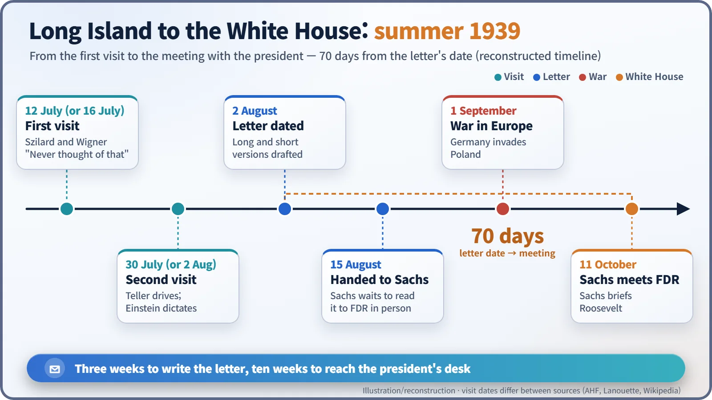
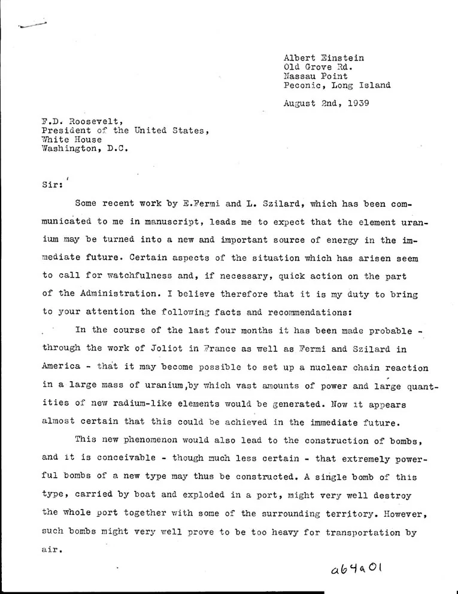
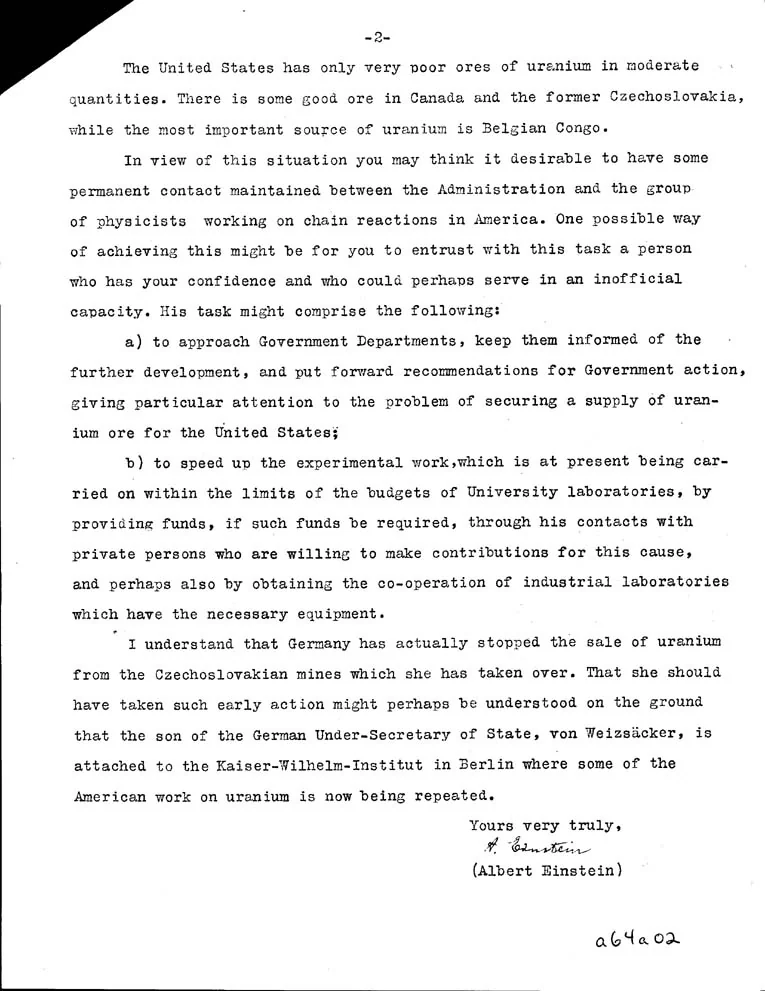

Nuclear History · 076
A Two-Page Warning Delivered to a Holiday Cottage — The Einstein–Szilard Letter (1939)
Two drives to Long Island, a letter dictated in German, and two typed pages that warned a president about a new kind of bomb.
In the summer of 1939, Leo Szilard drove out twice to Albert Einstein's holiday cottage on Long Island, first with Eugene Wigner and then with Edward Teller at the wheel. The result was a two-page letter to President Roosevelt, dated 2 August 1939, warning that uranium might yield "extremely powerful bombs of a new type" and that Germany was already moving to secure uranium.
July 1939, the far eastern end of Long Island, New York. A car was nosing along unfamiliar country lanes. Eugene Wigner (1902–1995) was at the wheel; Leo Szilard (1898–1964) sat beside him. The two Hungarian-born physicists were looking for the summer cottage where Albert Einstein (1879–1955) was on holiday. According to a story often told, they only found it after asking a small boy by the roadside for directions; it cannot be confirmed from first-hand records.
They had not driven out to pay their respects to a 60-year-old celebrity. They had come with a warning.
Why Einstein?
That spring, several laboratories had found that when a uranium nucleus splits, it releases more than one neutron. That meant a chain reaction might be possible: each neutron splitting another nucleus, which releases more neutrons, and so on. Set off all at once, that could be a bomb. And, as Szilard never stopped pointing out, physicists in Nazi Germany read the same journals.
Oddly, the first country on his mind was Belgium. The world's most important uranium source at the time was the Belgian Congo, then a colony. Someone had to warn the Belgians not to let that ore reach Germany, but who would listen to a refugee physicist? Einstein, though, was a friend of the Belgian royal family, notably Queen Elisabeth. [4]
"I never thought of that"
Sources disagree on the date of the first visit: 12 July or 16 July. When Szilard explained the chain reaction, Einstein reportedly replied, "Daran habe ich gar nicht gedacht" ("I never thought of that at all"). The man behind E = mc² had not followed that particular road. He grasped it quickly, though, and dictated a draft in German to a Belgian cabinet minister he knew. [3] [4]
Meanwhile, the plan grew. Szilard met Alexander Sachs, an economist and informal adviser to President Franklin D. Roosevelt, who said the letter should go straight to the president, and offered to deliver it himself.
The chauffeur who entered history
The second visit came on 30 July (some sources say 2 August). Wigner was away in California, so the driver this time was Edward Teller (1908–2003). Teller later joked: "I entered history as Szilard's chauffeur." [3]

Einstein again dictated the gist in German. Back in New York, Szilard produced two English versions, of roughly 25 and 45 lines, and let Einstein choose; the longer one went to the president. It was dated 2 August 1939 and headed "Old Grove Rd., Nassau Point, Peconic, Long Island." [1] [4]
What the two pages said
The typed letter opens calmly: "Some recent work by E. Fermi and L. Szilard, which has been communicated to me in manuscript, leads me to expect that the element uranium may be turned into a new and important source of energy in the immediate future." Then comes the point: "it is conceivable — though much less certain — that extremely powerful bombs of a new type may thus be constructed. A single bomb of this type, carried by boat and exploded in a port, might very well destroy the whole port together with some of the surrounding territory." [1]

Page two is practical. The United States had "only very poor ores of uranium in moderate quantities"; Canada and the former Czechoslovakia had some good ore, "while the most important source of uranium is Belgian Congo." Einstein suggested that the president entrust a person "who has your confidence" to act "in an inofficial capacity" (the letter's own spelling):
- to keep government departments informed and press for a secure supply of uranium ore for the United States;
- to speed up experiments then limited by university budgets, with private funds and the help of industrial laboratories.
The final paragraph was chilling. Germany had "actually stopped the sale of uranium from the Czechoslovakian mines which she has taken over," perhaps because the son of the German Under-Secretary of State, von Weizsäcker, worked at the Kaiser Wilhelm Institute in Berlin, "where some of the American work on uranium is now being repeated." [1]

How good was the forecast?
Remarkably good. The first controlled chain reaction came three years and four months later, on 2 December 1942 in Chicago, and much of the Manhattan Project's uranium did come from the Congo. Some guesses missed. The bombs that "might very well prove to be too heavy for transportation by air" weighed roughly 4.4 to 4.7 tonnes in 1945 and were dropped from B-29 bombers. Germany's progress was also overrated: its scientists never built a self-sustaining reactor before the war ended. [2]
![Table comparing six claims of the 1939 letter with what followed, each marked Right, Wrong or Partly: chain reaction soon (right, Chicago Pile-1 in 1942), powerful new bombs (right, 1945), too heavy for aircraft (wrong, 4.4 to 4.7 tonne bombs dropped from B-29s), Belgian Congo as key uranium source (right), a government go-between (partly, Uranium Committee with a first outlay of 6,000 dollars), Germany halting Czech uranium sales (partly, German research never reached a working reactor); below, a quotation of the letter's sentence about a bomb carried by boat into a port](../../assets/images/history/076-einstein-szilard-letter/fig2-letter-claims.webp)
The man who signed but did not build
Szilard handed the signed letter to Sachs on 15 August. Then Germany invaded Poland on 1 September, and it took Sachs more than two months to get his meeting with Roosevelt. [2] [3]
One popular myth needs correcting: Einstein did not build the atomic bomb. Szilard drove the drafting; Einstein signed. He took no part in the Manhattan Project, and in 1940 he was refused a security clearance. He wrote to Roosevelt twice more, in March and April 1940. A fourth letter, dated 25 March 1945, went unread: Roosevelt died on 12 April. [3]
In November 1954 the chemist Linus Pauling noted Einstein telling him: "I made one great mistake in my life — when I signed the letter to President Roosevelt recommending that atom bombs be made; but there was some justification — the danger that the Germans would make them." The wording varies between records. What is clear is where the letter came from: the fear that Germany might get there first, and the urgency of exiled scientists trying to make a government listen. [5]